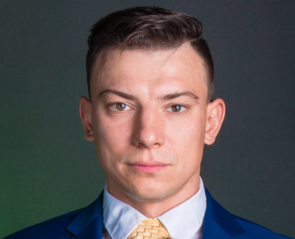

Oleksii GERASYMCHUK
Web Developer | Full Stack Developer

Summary
Full Stack Developer with a background in various fields, including law enforcement, aviation, finance, and project management. Proven ability to manage complex tasks and deliver high-quality results. Recently completed The Complete 2024 Web Development Bootcamp, The data analyst, the IT support technical skills bootcamp expanding skills in modern web technologies.
Education
- Master’s Degree in Economics
Kyiv National University of Trade and Economics, Kyiv, Ukraine
2001 - 2010
Work Experience
- Police Officer
Winnipeg Police Service, Winnipeg, Canada
August 2021 - Present
Responsibilities:
- Responding to various calls for service, investigating criminal offenses, and collecting evidence.
- Flight Operations Coordinator
Calm Air International LP, Winnipeg, Canada
March 2021 - August 2021
Responsibilities:
- Monitoring and coordinating flight operations activities
- Managing crew logistics and ground transportation
- Project assistant, Case worker
United Nations, International Organization for Migration, Kyiv, Ukraine
April/2018 - December/2019
Responsibilities:
- Undertaking case management activities, such as program access, prescreening, adjudications support
- Undertaking refugee form-fill and casework interviews for the purposes of recording case information, entering data into various databases and performing QC&AC
- Senior Economist
State Savings Bank of Ukraine, Kyiv, Ukraine
July/2017 - March/2018
Responsibilities:
- Analyzing financial data by collecting, monitoring and creating financial models for decision support
- Improving financial status by analyzing results; monitoring variances; identifying trends; recommending actions to management
- Technical Compliance Officer, Air Operations Assistant
United Nations Organization Stabilization Mission in the Democratic Republic of Congo (MONUSCO), Bukavu, DR Congo
July/2014 – July/2017
Responsibilities:
- Planning and coordinating air logistical activities
- Monitoring technical and safety assets performance
Skills
- Full Stack Development
- Database Management
- Project Management
- Financial Analysis
- Customer service
Certifications
- The Complete 2024 Web Development Bootcamp - UDEMY Certification
- The Complete Cyber Security Course - UDEMY Certification
- The Data Analyst Course - UDEMY Certification
- IT Support Technical Skills Bootcamp
- Training on International Public Sector Accounting Standards Certificate
Other